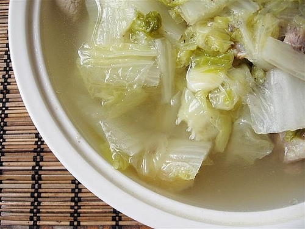

Napa Cabbage Soup Recipe

Description
Napa cabbage soup is a light and refreshing dish that goes well with white rice.
It is easy to make and best served when it's cold out. Follow this recipe and
you will have a hot and healthy soup to enjoy for dinner tonight.
Ingredients
- Napa cabbage: 1
- Ground pork: 1lb
- Green onions
- Shallot: 1
- Cooking oil
- Salt and pepper
Steps
- Chop up the napa cabbage in 1 inch increment
- Mince shallot into tiny pieces and put aside
- Marinade ground pork with minced shallot, salt, and pepper for 30 minutes or more
- Heat up a big pot with cooking oil and put the marinaded ground pork in
- Break up ground pork into small pieces and stir well
- Once the ground pork is cooked and turn white, pour them aside, retain the juice in the pot
- Fill the pot with water and return to the heat source; turn heat up to high to boil the water
- Once the water is boiling, add napa cabbage
- Stir and cook napa cabbage for about 5 minutes then add the pork back in
- Season with more salt and pepper and do a taste test, add more seasoning if needed
- Turn off the heat and add green onions. Do a final stir to mix everything together